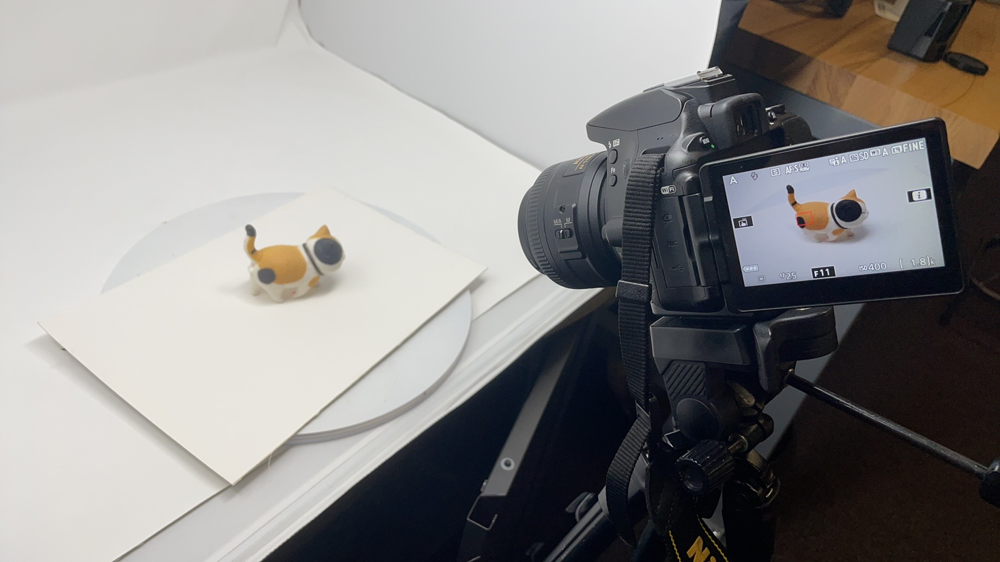
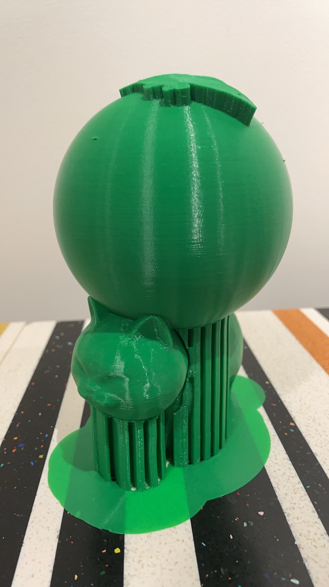

Project | 2024
猫的摄影测量与程序化工作流
Cat Photogrammetry and Procedural Workflow
一个从实物拍摄与摄影测量开始、在 Houdini 中继续程序化处理，并以三维打印验证成果的完整工作流。
A complete workflow that begins with photographing and reconstructing a physical object, continues through procedural work in Houdini, and concludes with 3D-printed results.
Overview | 项目简介
项目以猫摆件为拍摄对象，通过 Agisoft Metashape 完成摄影测量重建和网格生成，并准备可用于后续加工的 STL 网格。第一阶段生成的数字模型直接成为第二阶段的输入，因此两部分共同构成一个连续项目。
The project uses a cat figurine as its capture subject. Agisoft Metashape supports the photogrammetric reconstruction and mesh generation, followed by preparation of an STL mesh for further work. The digital model produced in the first stage becomes the direct input to the second, so both stages belong to one continuous project.
Process | 过程
工作流依次包括环绕拍摄实物、生成并整理网格、在 Houdini 20.5 中通过节点网络进行程序化组合与变形，以及准备并检查三维打印结果。这个顺序展示了同一项工作如何从现实物体采集，推进到数字资产处理，再回到实体输出。
The workflow moves in sequence from multi-angle object capture to mesh generation and cleanup, procedural combination and transformation through a Houdini 20.5 node network, and preparation and inspection of 3D-printed results. It shows one body of work moving from physical capture to digital asset processing and back to physical output.
Media | 图像与成果




Details | 项目信息
Links | 附件链接
- 模型与 Houdini 源文件暂不公开，待资产发布检查完成。 | Model and Houdini source files are not public while the asset release review is pending.